Título de Base: Técnico Universitario en Programación (UTN FRSR)
Desempeño actual: Auxiliar Docente y Tutor en la UTN FRSR (Modalidad Virtual)
Formación pedagógica: 2.º Año del Profesorado para la ETP (Mendoza)
Espacio Curricular: Actualización Científico-Tecnológica (192 hs) - Prof. Celeste Derra
“La actualización tecnológica adquiere sentido cuando puede aplicarse, compartirse y convertirse en oportunidades reales de formación.”
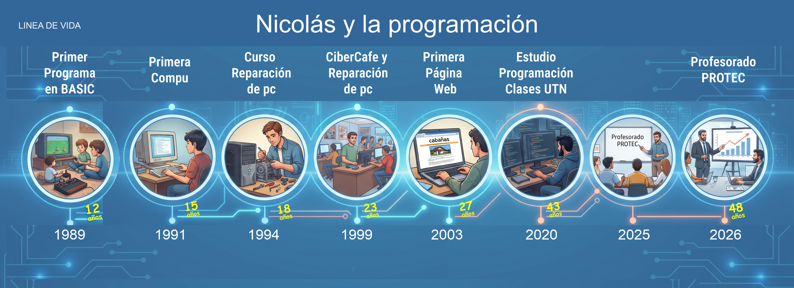

“Un sitio web que no se adapta hoy, es una experiencia que deja afuera a los usuarios.”
Pasa el mouse sobre cualquier portafolio para ver el zoom dinámico, o haz clic para ampliarlo en pantalla completa:
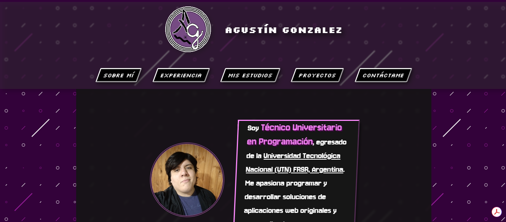
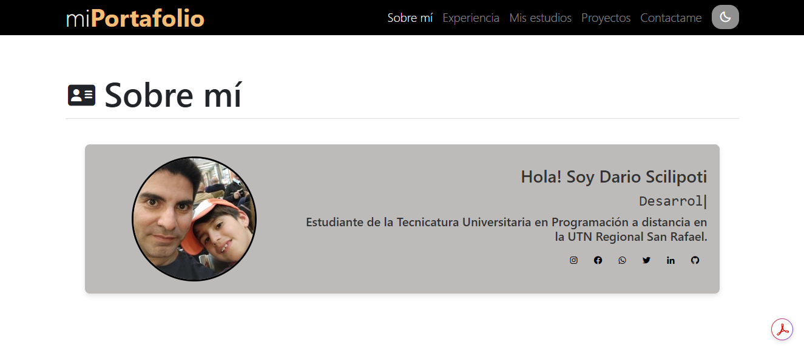
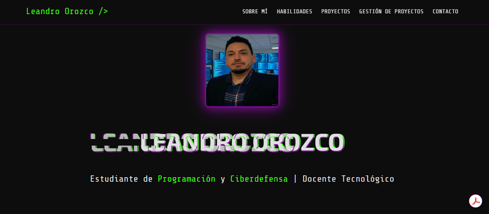
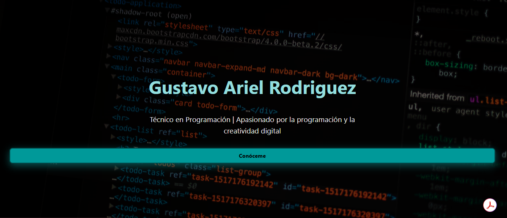
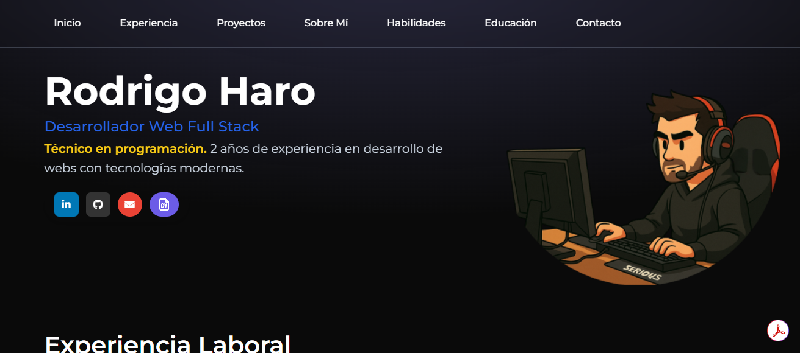
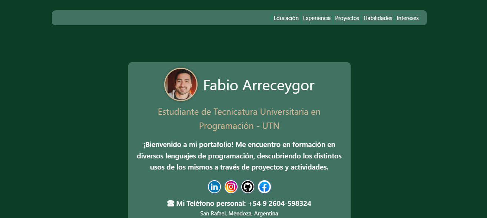
Como un hueso rígido sin articulaciones
Todo el código se encuentra acumulado en un único bloque continuo.
Como los órganos del cuerpo humano
Módulos autónomos (Header, Proyectos) que se comunican coordinadamente.
Frameworks reconocidos en la industria: Herramientas estándar como React, Angular, Svelte o Vue permiten estructurar software robusto y escalable.
Pasa el mouse para interactuar con cada proyecto avanzado:
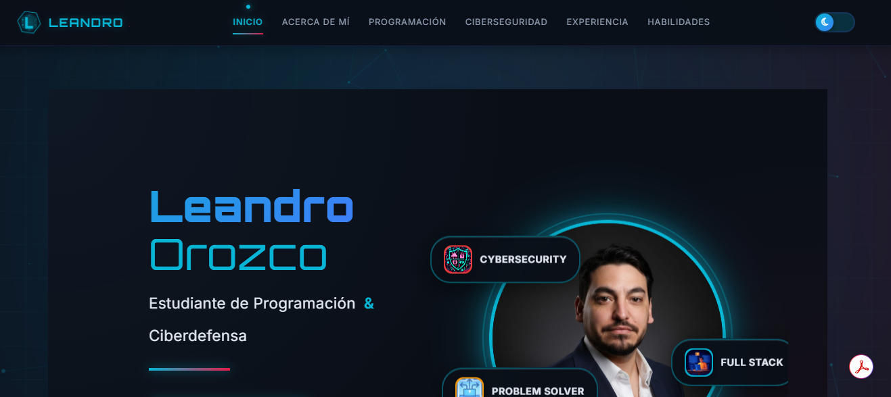
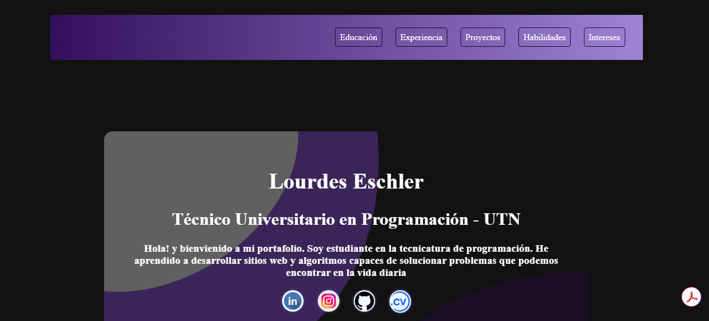
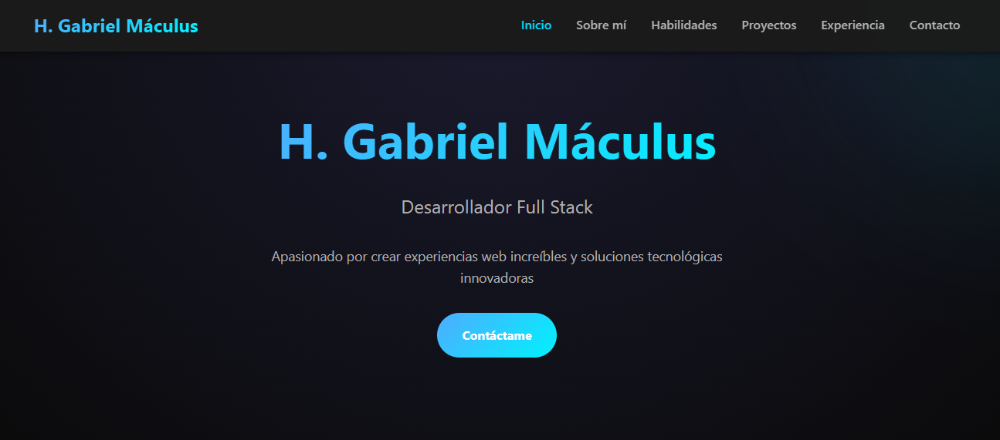
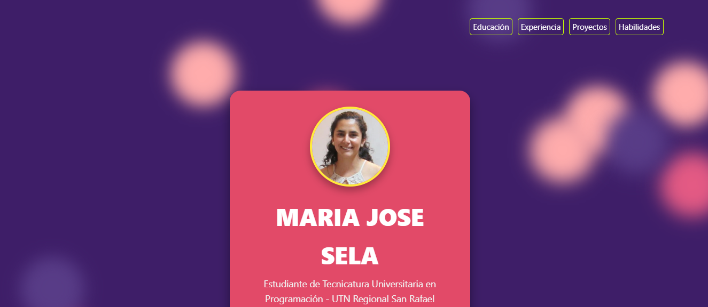
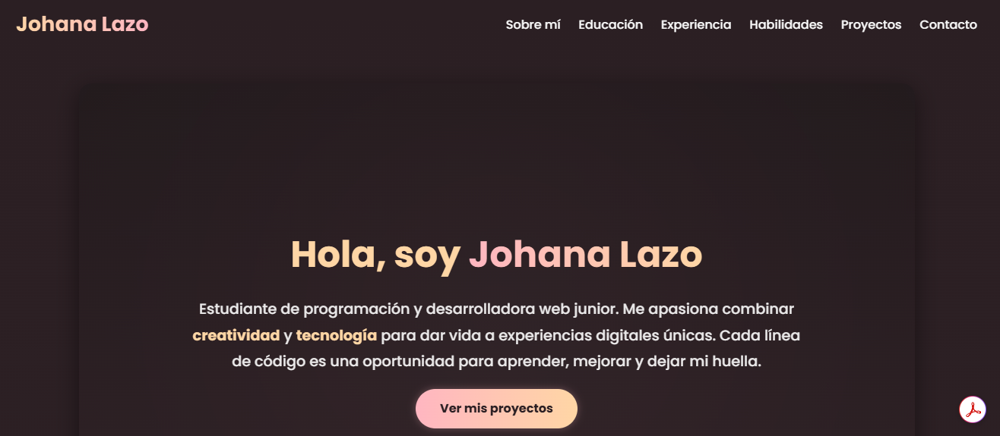
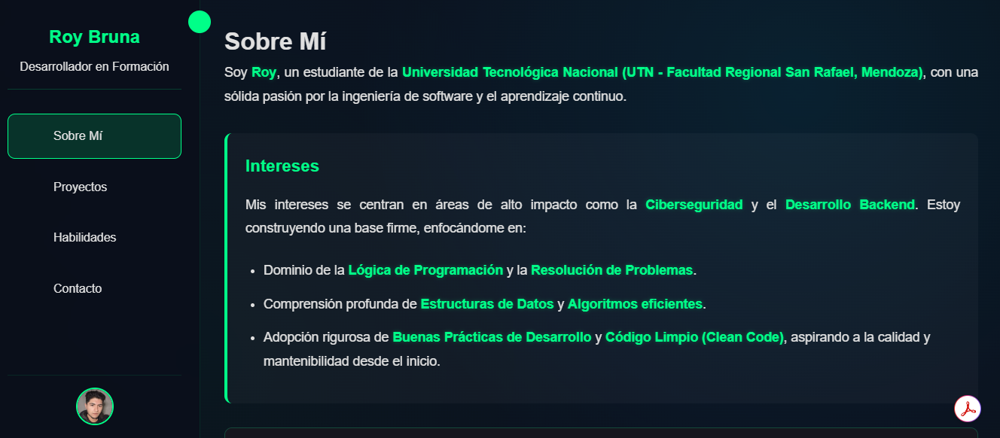
Recursos abiertos y libres: Acompañamiento a los alumnos mediante clases grabadas en YouTube:
“La transposición didáctica permite acercar desafíos reales de la industria a la realidad del aula técnica.”
📺 Canal Oficial en YouTube
Haz clic para abrir directamente los videos formativos:
▶ Ir al Canal "Nico Code" en YouTube"A lo largo de estas 192 horas de actualización, vivencié que el aprendizaje técnico se vuelve significativo cuando completamos el ciclo: Comprendimos estándares modernos, Construimos soluciones reales, Enseñamos facilitando el camino a nuestros alumnos y Profesionalizamos nuestra labor docente para la Educación Técnico-Profesional de Mendoza."
Enlaces directos a los recursos desarrollados: